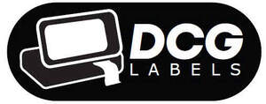
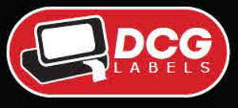

Trade Mark Journal No.2025/046 14 November 2025
UK00004289053 4 November 2025 (7,9,16,17,20,21)
Mark 1

Mark 2

Mark 3
Mark 4
Mark 5
- Class 7
- Label dispensing machines other than for office use; packaging machines for food; parts and fittings of all the aforesaid goods.
- Class 9
- Labels with machine-readable codes; Temperature indicator labels, not for medical purposes; Temperature indicator labels for use on food; Temperature indicator labels for use on beverages; Temperature indicator labels for use on ingredients, partially prepared ingredients, and partially cooked ingredients; magnetic Self-adhesive labels; label readers being decoders; Labels with integrated RFID chips; Labels carrying magnetically recorded or encoded information; Labels carrying optically recorded or encoded information; Labels carrying electronically recorded or encoded information; Labels carrying electronically recorded or encoded information for use on food; Labels carrying electronically recorded or encoded information for use on beverages; Labels carrying electronically recorded or encoded information ingredients, partially prepared ingredients, and partially cooked ingredients; Labels carrying magnetically recorded or encoded information for use on food; Labels carrying magnetically recorded or encoded information for use on beverages; Labels carrying magnetically recorded or encoded information for use on ingredients, partially prepared ingredients, and partially cooked ingredients; labels carrying optically recorded or encoded information for use on food; labels carrying optically recorded or encoded information for use on beverages; labels carrying optically recorded or encoded information for use on ingredients, partially prepared ingredients, and partially cooked ingredients; Labels with integrated RFID chips; for use on food; Labels with integrated RFID chips; for use on beverages; Labels with integrated RFID chips; for use on ingredients, partially prepared ingredients, and partially cooked ingredients; parts and fittings of all the aforesaid goods.
- Class 16
- Labels; label printing machines for household and stationery use; label printing machines for use in kitchens, cafes, bars and restaurants; printing machines for use in food production establishments; label printing machines for use in relation to the production of food; label printing machines for use in relation to the production of beverages; label printing machines for use in relation to the safe storage of food; label printing machines for use in relation to the safe storage of ingredients, partially prepared ingredients, and partially cooked ingredients; label printing machines for use in relation to the safe storage of beverages; label printing machines for office use; adhesive labels; cardboard labels; labels of paper; adhesive printed labels; printed paper labels; labels, not of textile; adhesive packaging tapes; stickers; stickers for use in kitchens, restaurants and food production establishments; stickers for use in cafes, bars and beverage production establishments; labelling appliances; date indicators labels; date stamps [daters]; printed labels printed with one of the seven days of the week; printed labels for food safety; printed labels for beverage safety; printed labels for allergen safety; printed labels for food production; printed labels for labelling food with date of production; food wrappers; printed labels for food wrappers; printed labels for use in kitchens, cafes, bars and restaurants for labelling ingredients, partially prepared ingredients, and partially cooked ingredients; printed labels for labelling ingredients, partially prepared ingredients, and partially cooked ingredients with date of production; printed labels for use in kitchens, cafes, bars and restaurants for labelling food; printed labels for food production featuring allergy safety information; printed labels for food production featuring safe food handling information; printed labels for labelling food with date of safe consumption; printed labels for labelling beverages with date of safe consumption; printed labels for labelling ingredients, partially prepared ingredients, and partially cooked ingredients with date of safe consumption; food bags of paper or plastics; plastic bags for packaging of food; plastic bags for packaging of ingredients, partially prepared ingredients, and partially cooked ingredients; plastic bags for packaging of beverages; bags and articles for packaging, wrapping and storage of paper, cardboard or plastics; bags and articles for packaging, wrapping and storage of paper, cardboard or plastics for food; bags and articles for packaging, wrapping and storage of paper, cardboard or plastics for beverages; bags and articles for packaging, wrapping and storage of paper, cardboard or plastics for ingredients, partially prepared ingredients, and partially cooked ingredients; biodegradable paper pulp-based to-go containers for food; plastic food storage bags; biodegradable paper pulp-based to-go containers for food, food wrapping plastic film; greaseproof paper; baking paper; paper napkins; serviettes of paper; paper towels; towels of paper; paper handtowels; toilet paper; parts and fittings of all the aforesaid goods.
- Class 17
- Adhesive packaging tapes, other than for household or stationery use; self-adhesive packaging tapes, other than stationery and not for medical or household purposes; parts and fittings of all the aforesaid goods.
- Class 20
- Labels of plastic; packaging containers of plastic; plastic trays for foodstuff packaging; plastic trays [containers] used in food packaging; pots of plastic for packaging; egg cartons [packaging] of plastic; boxes (packaging -) in made-up form [plastic]; boxes made of plastics materials for packaging; parts and fittings of all the aforesaid goods.
- Class 21
- Plastic food storage containers; containers for beverages; kitchen containers; glass food storage containers; foil food containers; food storage containers; plastic food storage containers; pots with lids being plastic food storage containers; paper cups; paper towel dispensers; paper hand towel dispensers; paper plates; parts and fittings of all the aforesaid goods.
DIRECT INDEPENDENT IMPORTS LIMITED
Representative: Swindell & Pearson Limited